Advanced text settings
In the Advanced Text Settings pop-up panel, you can find tools to enhance typography in Gravit Designer.
As with other text properties, its options have an intuitive interface.
To open the panel:
- Select the text to activate the Text Appearance Panel.
- Click the icon in the top-right of the Appearance panel.

Advanced Text panel appears. This panel is divided into three sections:
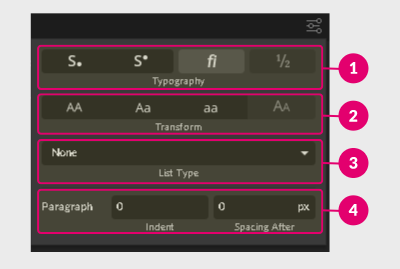
- Typography(1) section to add special effects to text
- Text Transform(2) section
- List Type(3) drop-down
- Paragraph(4) section to control the paragraph attributes
Typography Settings

Use options under the Typography section to add special effects to the text:
- Select Subscript(1) to set the selected text below the baseline.

- Select the Superscript(2) to set the selected text above the ascender line.

- Select the Ligature(3) to make the ligatures available for the specific typeface.
 Note: Ligature is a special character that combines two glyphs into a single glyph. It reduces the tension of the narrow white space and eliminates unattractive inclinations between two colliding letters, such as ff, fl, fi for Raleway Regular in the example above.
Note: Ligature is a special character that combines two glyphs into a single glyph. It reduces the tension of the narrow white space and eliminates unattractive inclinations between two colliding letters, such as ff, fl, fi for Raleway Regular in the example above. - Select Fractions(4) to apply a special fraction style, created by the type designer.

Transform settings
Use options in this section to change the letter case of the selected text.

- Select Uppercase(1) to convert all letters to capitals.
- Select Capitalize(2) to convert the first letter of each word to capitals.
- Select Lowercase(3) to convert all letters to lower case.
- Select Small Caps(4) to make small caps from the selected text.

Working with lists
You should organize data to benefit the user. Ordered lists can be a viable way to do this. You can use them to arrange, enumerate or emphasize information.
Lists are an essential part of both landing- and squeeze-page design.
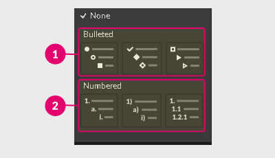
Gravit Designer supports two types of lists:
- Bulleted(1) with all kinds of geometrical shapes to mark the start of the paragraph
- Numbered(2) with Arabic numerals
To apply one to selected text, open the List Type drop-down to open a panel with three options in each category.
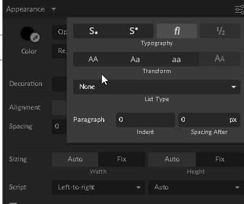
Once applied, Gravit Designer displays the type of list in the drop-down.
Expand it again to see which of the numbered list options is applied to the selected text passage.

Click None if you want to clear the formatting.
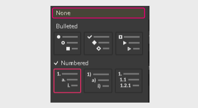
List items
Gravit Designer renders the list in the same way as traditional text editors:
- Click to create a new list item.
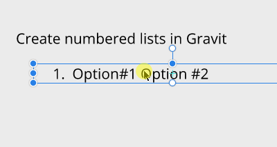 - Click + to start a new paragraph within current list item.
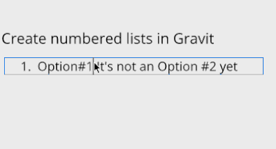 - Click to create a nested list item. Click to start a list items on the same level.
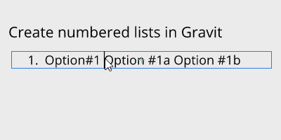
Click + to return to the level of the parent.
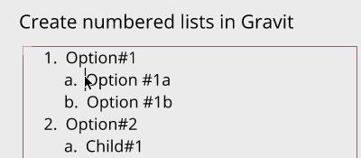
In Gravit Designer, you can have an infinite number of nested list items
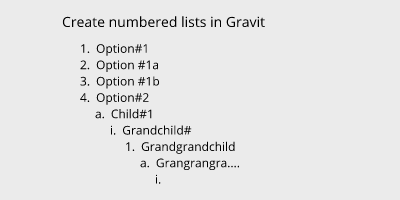
Finally to end the list, press twice or once.
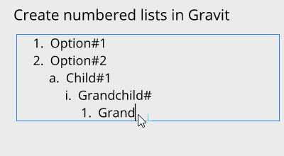
Paragraph features

The Paragraph section contains two text fields to adjust the spacing between paragraphs of the selected block of text:
- Indent(1)
- Spacing After(2)
Type a specific number or use to change the values inside the fields.
Indent
Set a numerical value to introduce a space at the beginning of each of the selected paragraphs.

Spacing After
Type a numerical value to add additional vertical space between the selected paragraph and the following one.

Language
Allows you to apply language-specific glyph alternatives to text. Those are also known as Localized forms in fonts (locl).
Example: Both text lines in the image below use the same font. The top line uses the default language, the bottom line is set to Bulgarian. Alternative characters are colorized for clarity.
You can change the Language of the text box (or text selection) in the Advanced Text Properties dialog.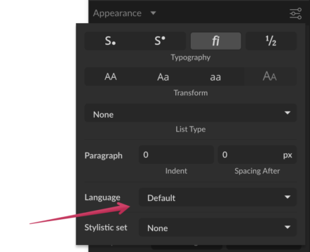
Stylistic sets
Allows you to apply glyph alternatives that are included as stylistic sets in the active font.
Example: Both text lines in the image below are using the same font. The top line doesn’t use any stylistic set, the bottom line uses “S01” provided by Pacifico font. Alternative characters are colorized for clarity.
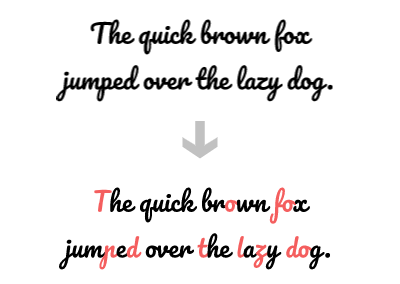
You can change the Stylistic set of the text box (or text selection) in the Advanced Text Properties dialog.